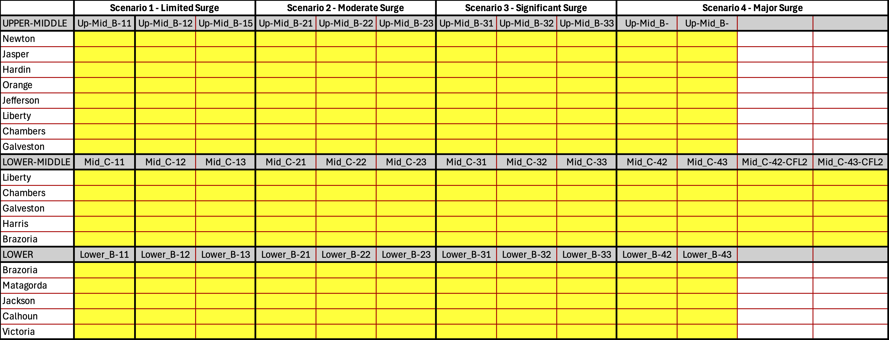
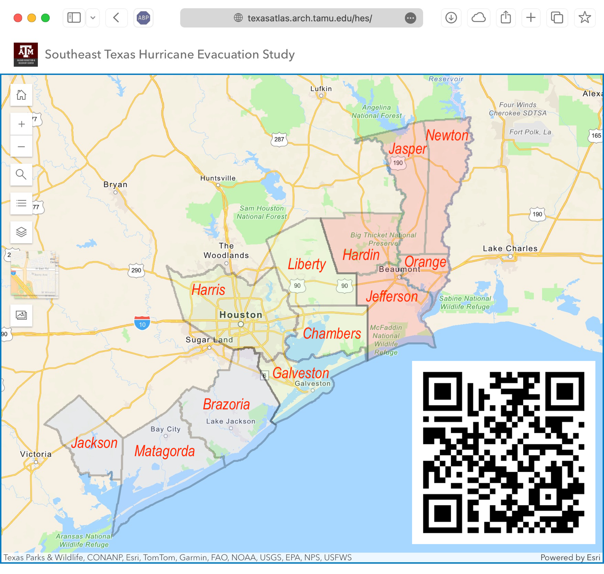

Project Front Page | Last updated: Wed Jan 7 2026
This page provides a central hub for project updates, events, and links to the Planning Atlas and related resources. It supports the hurricane evacuation study by keeping participants and stakeholders informed about meetings, draft reports, and key materials. The site is a working resource and will evolve throughout the project. For questions or requests, contact Alexander Abuabara at abuabara@tamu.edu.
Scenarios Table (Jan 2026)

Using a custom-developed script, we processed the evacuation results from RtePM for
multiple runs, reading a GIS shapefile of block-level results,
aggregating vehicle counts by zone and time interval, and transforming those
counts into a "cumulative evacuated proportion" time series per zone and scenario.
The script parses zone labels into county and planning-zone categories,
standardizes the planning-zone names and ordering, and for each county generates
a graph consisting of (1) line curves of evacuated proportion over time for all
planning zones in that county and (2) a small summary table reporting the estimated
time (via linear interpolation) when each curve reaches 50% and 90% evacuation.
The table layout below shows which graphs are available for each county under
each scenario.
Southeast Texas Hurricane Evacuation Study Hazard Analysis
Updated hazard analysis for coastal counties including Brazoria, Chambers, Galveston,
Hardin, Harris, Jackson, Jasper, Jefferson, Liberty, Matagorda, Newton, and Orange.
In previous Hurricane Evacuation Studies undertaken by the National Hurricane Program, the Texas coast was divided into four evacuation study areas: the Rio Grande Valley (Hidalgo, Cameron, & Willacy), Coastal Bend (Kenedy, Kleberg, Nueces, San Patricio, Aransas, Refugio, Calhoun, & Victoria), Houston/Galveston (Jackson, Matagorda, Brazoria, Harris, & Galveston) and Sabine Lake (Chambers, Liberty, Jefferson, Hardin, Orange, Jasper, & Newton).
This time, the 12 counties comprising the Houston/Galveston and Sabine Lake study areas have been combined into one single study area, the Southeast Texas Hurricane Study Area. To facilitate the Hurricane Evacuation Study process, particularly when holding workshops to work more closely with county/municipality and other stakeholders, the 12 counties have been divided into three planning zones: Upper, Middle, and Lower. The counties in each planning zone are as follows:
